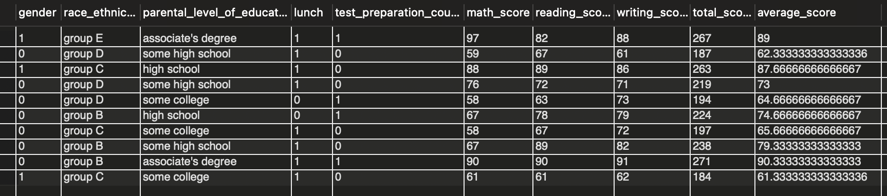

First of all, I found and downloaded the dataset that I will be using on Kaggle. It can be found here:
Student Performance Dataset
. Then using the SQL queries below, I imported the dataset into a MySQL Workbench.
create database student_performance;
use student_performance;
rename table Cleaned_Students_Performance to all_scores;
It is always good practice to verify the data once you have imported it in.
Therefore, I have done this using the query below.
select * from all_scores limit 10;
This selects the first 10 rows of the data and running this query returned the table below.

Figure 1: Sample of the dataset, namely the first 10 rows.
Now, that we have downloaded, imported and verified the data, we can begin our analysis!
To see what I did follow this link: SQL Analysis.